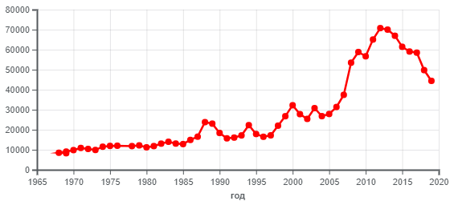
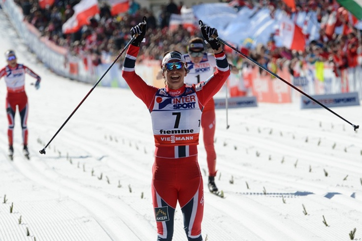
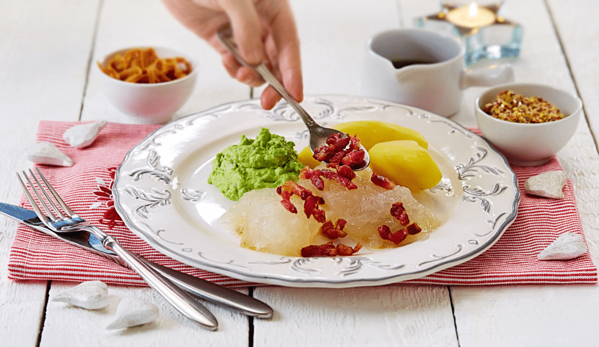
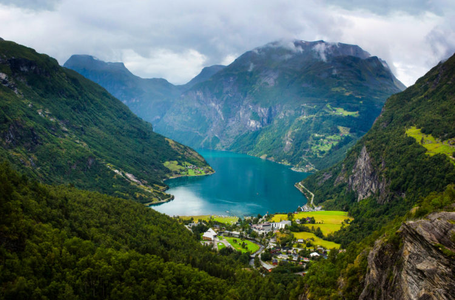
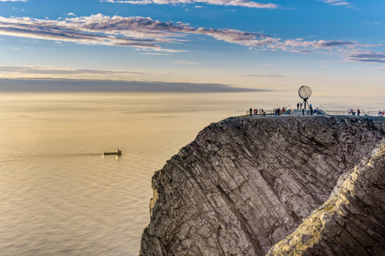
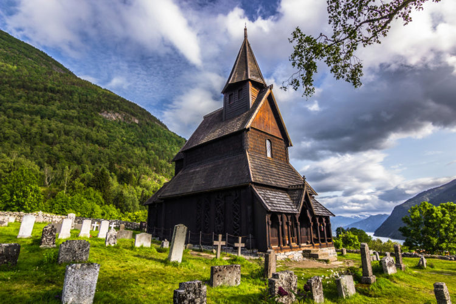
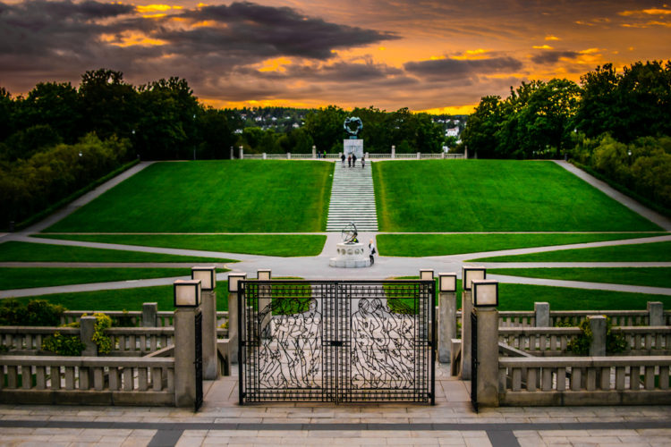
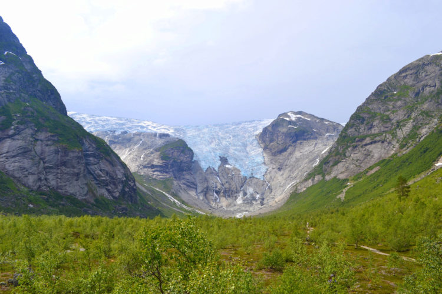

Норвегия - государство в Северной Европе , которое распологается в западной части Скандинавского полуострова и на огромном количестве прилегающих островов.
Норвегия является конституционной монархией с парламентской демократией . Глава страны — король.
Религия Норвегии
Религией Норвегии является Лютера́нство. Лютера́нство - это одно из наиболее старых протестантских течений в христианстве. С лютеранством связано само возникновение понятия протестантизм, поскольку именно лютеран стали называть протестантами после их протеста в Шпайере. Возникло в результате реформационного движения в Германии в XVI веке, а затем и во время формирования государственных церквей скандинавских стран.
На протяжении почти всей своей истории норвежское общество было этнически однородно. К 1980-м годам в Норвегии, для притормаживания негативных экономических последствий демографического старения населения, была принята либеральная иммиграционная политика.
 Иностранные граждане, иммигрирующие в Норвегию ежегодно, 1967-2019
Суд
Высшая судебная инстанция — Верховный суд Норвегии, основанный в 1815 , состоит из двадцати судей , суды апелляционной инстанции , суды первой инстанции — суды тингов, до 2002 года — уездные суды и городские суды, суд по делам импичмента — государственный суд.
Экономика Норвегии
Норвегия имеет развитую смешанную экономику со значительной долей государственного сектора в стратегических отраслях. Несмотря на чувствительность к глобальным экономическим циклам, экономика Норвегии продемонстрировала устойчивый рост с начала индустриальной эры. — крупнейший производитель нефти и газа в Северной Европе. Доля нефтегазового сектора в ВВП — 23 % в 2015 году. Геологоразведка нефти на шельфе страны началась лишь в 1962 году компанией Phillips Petroleum (США). Первое крупное месторождение открыто лишь в 1969 году. Первая промышленная добыча нефти началась в 1970 году, незадолго до нефтяного кризиса 1973 года. До этого экономика Норвегии основывалась на рыболовстве и фрахте судов.
Среди крупнейших газет Норвегии выделяются ежедневные «Верденсганг» (365 тыс. экземпляров), «Афтенпостен» (250 тыс.), «Дагбладет» (183 тыс.), широко подающая внешнеполитические материалы, и другие. Норвегия занимает одно из ведущих в мире мест по количеству периодических печатных изданий на душу населения. Норвежский газетный союз объединял 152 газеты в 1998 году. Большая часть изданий поддерживается или контролируется Консервативной партией — 44 издания, общим тиражом 800 тыс. экземпляров.
Энергетика
По производству электроэнергии на душу населения Норвегия занимает первое место в мире. При этом, несмотря на наличие больших запасов углеводородов, 99 % электроэнергии вырабатывается на гидроэлектростанциях, в связи с наличием значительных гидроресурсов в Норвегии. Треть произведённой в Норвегии электроэнергии потребляется металлургической промышленность,а атомной энергии у Норвегии нет.
21 января - День рождения принцессы Ингрид Александры
6 февраля - день Саамского народа
21 февраля - День рождения короля Харальда
1 мая - общественный праздник
8 мая - День освобождения в 1945 году
День Конституции
7 июня - День расторжения унии со Швецией в 1905 году
4 июля - День рождения королевы Сони
20 июля - День рождения королевы Сони
29 июля - День смерти короля Олафа Святого
19 августа - День рождения кронпринцессы Метте-Марит
24 декабря - Рождество
25 декабря - 1-й день Рождества
26 декабря - 2-й день Рождества
Спорт в Норвегии
Норвегия участвовала почти во всех летних Олимпийских играх, начиная с игр в Париже 1900 года, и всех зимних Олимпийских играх, начиная с игр в Шамони 1924 года. С около полутора сотнями всего (в том числе более полусотни золотых) медалей на летних играх и более чем тремя сотнями (в том числе более сотни золотых) медалей на зимних играх, в общем медальном зачёте Олимпийских игр Норвегия замыкает первую двадцатку стран в летних играх и является третьей на зимних играх.
Так же в Норвегии дважды проходили зимние Олимпийские игры. Первый раз - в Осло,во второй раз - в Лиллехаммере.
 Лыжница Марит Бьёрген.
Норвежский шахматист Магнус Карлсен с 2013 года является чемпионом мира и имеет высший в истории рейтинг Эло. <
Магнус Карлсен.
Норвежская кухня.
Норвежская кухня обусловлена в первую очередь холодным климатом в Скандинавии. Основными компонентами норвежской кухни являются рыба, мясо, каши, хлеб и молочные продукты.
Для сохранения запасов на зиму широко употребляется консервирование продуктов, как то: вяление, маринование, брожение. К наиболее типичным блюдам можно отнести лютефиск (замоченная в щелочном растворе и вымоченная затем в воде сушёная рыба), форикол (мясо ягнёнка с капустой и картофелем), ракфиск (забродившая форель), смёрбрёд (открытые бутерброды).
 Традиционный лютефиск с картофелем и гороховым пюре
Немного о Норвежской музыке
Среди наиболее распространенных жанров традиционной вокальной музыки ярче всего выделяются баллады (норв. kvad) и короткие, часто импровизированные песни (стев). Также были распространены рабочие, колыбельные, эпические, религиозные песни, трэлинг-вокал и старые печатные балладные истории (норв. skillingsviser). Были распространены песенные поединки. Ежегодно в Норвегии проводится два национальных конкурса народной музыки: Национальный фестиваль народной танцевальной музыки (конкурс традиционных танцев).
Гейрангер-фьорд - морской залив, который глубоко врезался в материк гигантским горным коридором. Посредине прямых и извилистых коридоров – пронзительная изумрудно-синяя гладь прозрачных и глубоких вод. В них отражаются отвесные скалы и пышная зелень. А по берегам – деревни, маленькие посёлки и фермы. Таким видят Гейрангер фьорд (Норвегия) те, кому посчастливилось здесь побывать.
 Гейрангер-фьорд
Мыс Нордкап - Если вы мечтаете увидеть океан с высокой скалы, буквально оказаться на краю света, тогда нужно постараться попасть на норвежский мыс под названием Нордкап . Он считается самой северной точкой Европы. У этой достопримечательности Норвегии есть множество положительных свойств. Это хорошо развитая инфраструктура,здесь имеются удобные подъездные пути, великолепные местные пейзажи. Гиды в Норвегии считают своим долгом познакомить гостей в стране с этим великолепным местом. Летом здесь солнце не опускается за горизонт, а зимой происходит самое удивительное представление в виде северного сияния.
 Мыс Нордкап
Ставкирка в Урнесе - Церковь Урнес Ставе находится в округе Согн к северу от Бергена. Она была построена в 1130 году и считается старейшим деревянным храмом. В декоре церкви объединены типичные орнаменты с изображениями животных эпохи викингов и христианские сюжеты. Археологические свидетельства доказывают, что это уже третий храм в этом месте, два предыдущих были простыми храмами, построенными следующим способом: балки вгоняли в грунт, соединяли их перегородками и возводили над ними крышу. Под обломками первого храма найдены захоронения, свидетельствующие о принятии викингами христианства.
 Ставкирка в Урнесе
Парк скульптур Вигеланда - В этом месте сосредоточено более 200 скульптур, созданных руками национального художника Густава Вигеланда. Парк характеризуется ухоженностью, все творения на его территории расположены очень живописно. Что посмотреть в Норвегии, а именно в Вигеланд-парке? В музее под открытым небом не только есть красивые ландшафты, но и большое количество удобных мест для отдыха, тропинок.
 Парк скульптур Вигеланда
Юстедальсбреен - Представляет собой самый большой на всей территории Европы ледник. Он имеет вид плато с 26-ю ледяными языками, отходящими в разные стороны. Общая площадь этой достопримечательности Норвегии составляет 1600 км². От нее берут свое начало и другие, не менее известные ледники. Территория, которую занимает ледник, включает в себя несколько муниципалитетов. Чуть больше 25 лет назад здесь основан парк национальной значимости.
 Юстедальсбреен
Туризм в Норвегии
Туризм в Норвегии - это природные достопримечательности и явления, а также культурные особенности норвежских городов и поселков.
Медицина в Норвегии
Качество и доступность медицинских услуг в Норвегии известны по всему миру, ведь главный принцип норвежского здравоохранения – это обеспечение медобслуживанием всех, без исключения, граждан страны, вне зависимости от их общественного статуса и толщины кошелька. Норвегия занимает третье место в мире, после США и Люксембурга, по уровню расходов на здравоохранение на душу населения, сама медицина в Норвегии отличная.
Ещё сайты на другие тематики!!!
↧ ↧ ↧ ↧ ↧ ↧ ↧ ↧ ↧ ↧ ↧ ↧ ↧ ↧ ↧ ↧ ↧ ↧